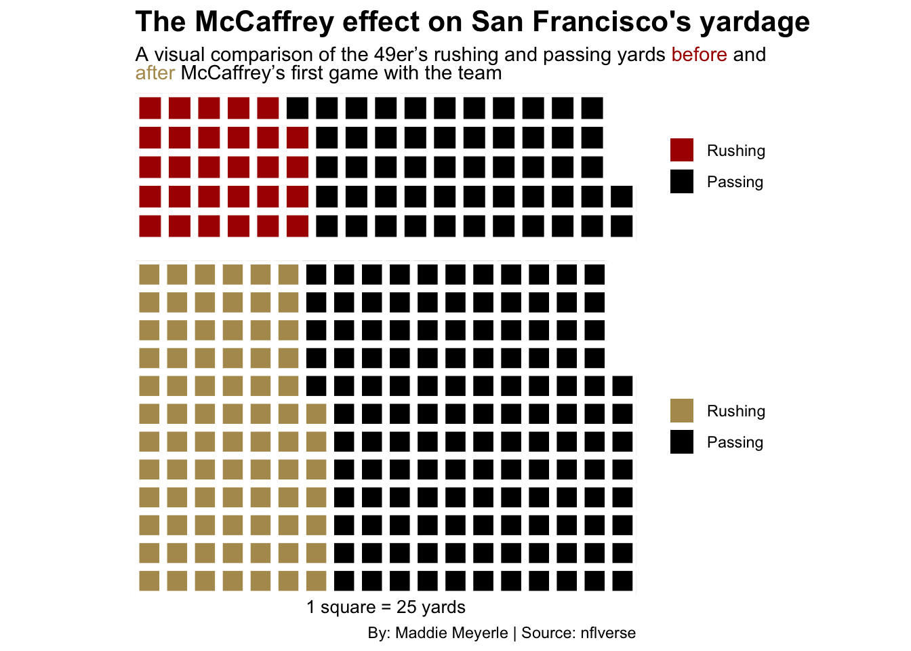
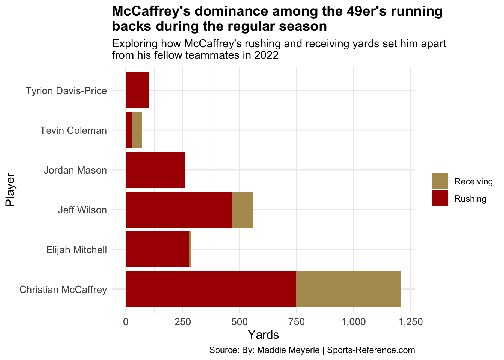

How did Christian McCaffrey’s mid-season addition to the San Francisco 49ers in 2022 impact their offensive performance and team success?
mccaffrey
analysis
nfl
Author
Maddie Meyerle
Published
December 5, 2024
In 2022, Christian McCaffrey made headlines when he was traded from the Carolina Panthers to the San Francisco 49ers. This move proved to be a game-changer for the team, as McCaffrey became an essential weapon for the 49ers’ offense. McCaffrey was acquired on October 20, 2022, in exchange for draft picks in 2023 and 2024 and made his debut in Week 7 against the Kansas City Chiefs. From there, he quickly became a full-time starter and a key contributor for the 49ers, adding another layer of excitement to their offensive game plan.
Before McCaffrey’s arrival, the 49ers were 3-3, but the trade gave them the spark they needed. By the end of the regular season, the team was sitting at 13-4, ultimately finishing with a 15-5 record. McCaffrey’s impact was undeniable, not only through his incredible rushing abilities but also his receiving skills. He became the first 49ers running back to record passing, rushing, and receiving touchdowns in a single game. This versatility made him a true threat, and his consistency after becoming a full-time start in Week 8 played a huge role in the team’s success.
McCaffrey’s contribution to the 49ers’ offense was evident in his performance on the field. Throughout the 2022 season, McCaffrey’s rushing and receiving yards fluctuated, with some games seeing impressive yardage and others where his output was more modest. This variation shows the dynamic nature of McCaffrey’s role within the team, as he adapted to different defensive schemes and played an important part in both ground and passing attacks.
Before McCaffrey’s arrival, the 49ers’ offensive yardage was solid but didn’t reach the level of explosiveness it achieved with him on the roster. The numbers highlight how much the team’s offensive game changed, with a clear spike in both rushing and passing yards after McCaffrey joined. While his contributions were a huge factor, the overall offensive balance also shifted dramatically.
Code
library(waffle)library(ggtext)after_date <-as.Date("2022-10-23")before_data <- pbp_data |>filter(posteam =="SF"& game_date < after_date) |>summarise(total_rushing_yards =sum(rushing_yards, na.rm =TRUE),total_passing_yards =sum(passing_yards, na.rm =TRUE) )after_data <- pbp_data |>filter(posteam =="SF"& game_date >= after_date) |>summarise(total_rushing_yards =sum(rushing_yards, na.rm =TRUE),total_passing_yards =sum(passing_yards, na.rm =TRUE) )before <-c("Rushing"=744, "Passing"=1347)after <-c("Rushing"=1991, "Passing"=3345)iron(waffle( before /25, rows =5, colors =c("#AA0000", "black") ) +labs(title ="The McCaffrey effect on San Franciso's yardage",subtitle ="A visual comparison of the 49er's rushing and passing yards <span style='color:#AA0000'>before</span> and<br> <span style='color:#B3995D'>after</span> McCaffrey's first game with the team", ) +theme(plot.title =element_text(size =16, face ="bold"),axis.title =element_text(size =10),axis.title.y =element_blank(),plot.subtitle = ggtext::element_markdown() ),waffle( after /25, rows =12, colors =c("#B3995D", "#000000") ) +labs(x ="1 square = 25 yards",caption ="By: Maddie Meyerle | Source: nflverse" ))

The impact of McCaffrey’s arrival can be seen in how the team’s rushing and passing yards changed. Before his trade, the 49ers had 744 rushing yards and 1,347 passing yards. After McCaffrey’s debut, these numbers increased significantly, with 1,991 rushing yards and 3,345 passing yards. This chart shows the dramatic shift in offensive production.
Looking at the contributions of the other 49ers running backs in the regular season provides an interesting perspective on how McCaffrey stood out. With several key running backs on the roster, it’s clear that McCaffrey was a dominant force. The yardage comparison shows that while other running backs had solid performances, McCaffrey’s contribution far exceeded his teammates.
Code
library(tidyverse)library(scales)runningbacks <-read_csv("data/niners2022.csv")players_of_interest <-c("Christian McCaffrey", "Jeff Wilson", "Elijah Mitchell", "Jordan Mason", "Tyrion Davis-Price", "Tevin Coleman")filtered_rb <- runningbacks |>filter(Player %in% players_of_interest) |>select(Player, RushYds, RecYds)long_data <- filtered_rb |>pivot_longer(cols =c("RushYds", "RecYds"),names_to ="Yard_Type",values_to ="Yards" )ggplot(long_data, aes(x = Player,y = Yards,fill = Yard_Type)) +geom_bar(stat ="identity") +coord_flip() +labs(title ="McCaffrey's dominance among the 49er's running\nbacks during the regular season",subtitle ="Exploring how McCaffrey's rushing and receiving yards set him apart\nfrom his fellow teammates in 2022",caption ="Source: By: Maddie Meyerle | Sports-Reference.com",x ="Player",y ="Yards",fill ="Yard Type" ) +scale_fill_manual(values =c("RushYds"="#AA0000", "RecYds"="#B3995D"),labels =c("RushYds"="Rushing", "RecYds"="Receiving")) +scale_y_continuous(labels = comma) +theme_minimal() +theme(plot.title =element_text(face ="bold", size =14),axis.title =element_text(size =12),legend.title =element_blank(),axis.text =element_text(size =10) )

McCaffrey’s contribution stands out when comparing the yardage among the 49ers’ running backs in the regular season. While others like Jeff Welson added value, McCaffrey’s total rushing and receiving yards surpassed the rest of the team’s running backs. This chart illustrates how much McCaffrey elevated the team’s offensive production, providing a reliable and dynamic option.
As San Francisco moved into the playoffs, McCaffrey remained a key factor in their offensive success. The team’s overall performance was instrumental in their playoff run, and McCaffrey’s contributions didn’t slow down.
In the playoffs, McCaffrey’s yardage continued to dominate, just as it had in the regular season. His performance was significant in the 49ers’ playoff run. This chart compares his yardage with the rest of the running backs on the team during this time.
McCaffrey’s trade to the San Francisco 49ers in 2022 was a transformative moment for the team. His ability to contribute as both a rusher and receiver allowed the 49ers to become a more dynamic offense, and his consistency helped elevate the team to a 15-5 record by the end of the season.
While McCaffrey’s individual achievements are impressive, it’s important to recognize the overall team effort. The 49ers’ defense ranked #1 by the end of the season and played a vital role in the team’s success. McCaffrey’s explosive playmaking ability and the defense’s dominance helped the 49ers go far in the playoffs.